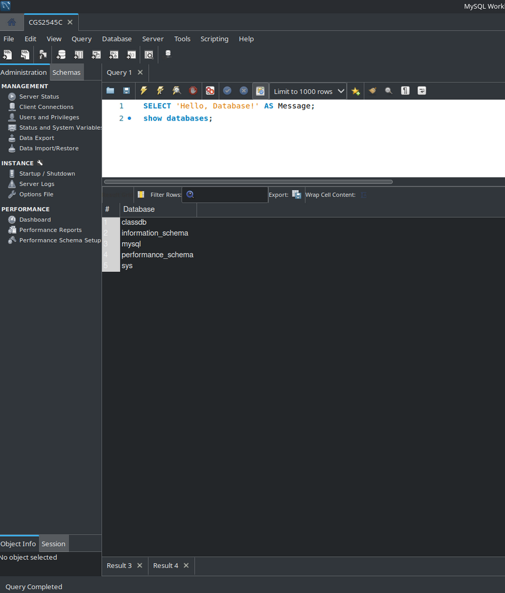

Setting up an SQL Database
Description
I worked in MySQL to set up and manage a MySQL Database. We first worked on planning the databse structure through realtional modeling. I then used SQL to build the tables, insert data, and query data from the databse.
What I Learned
- How to set up a MySQL Databse
- How to create tables in SQL
- How to insert data in SQL
- How to query a databse in SQL